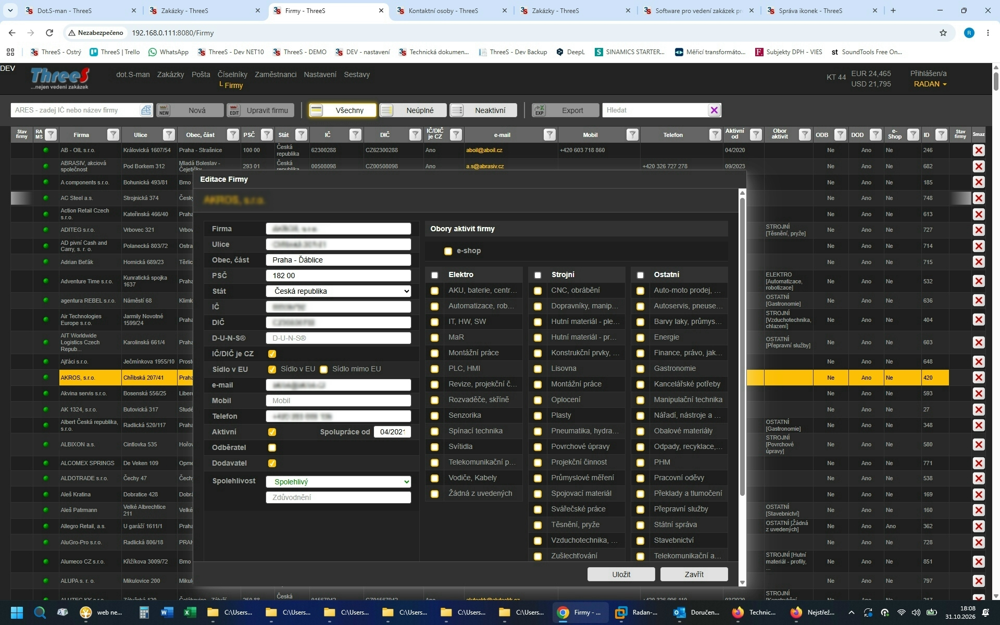

Časté otázky o ThreeS
Odpovědi na časté otázky o systému ThreeS, jeho funkcích, provozu a cenovém modelu.

Nejčastější dotazy zájemců
Odpovědi na nejčastější otázky ohledně funkcí, nasazení a praktického fungování systému ThreeS.
Co vlastně ThreeS je? Je to CRM anebo ERP?
Důsledně vzato, ani jedno. ThreeS spojuje vlastnosti obou a je vytvořen na základě praktických potřeb firem fungujících zakázkovým způsobem.
Ale hlavně: Existuje jediný ThreeS – vždy se všemi funkcemi.
Neplatíte za to, které funkce smíte používat. Platíte podle velikosti svého podnikání.
Proč malá firma jako moje potřebuje ThreeS?
ThreeS je místo, kde je uloženo naprosto vše, co potřebujete ke svému podnikání – tedy kromě peněz, k tomu jsou banky 😊 Ale s ThreeSem máte přehled, jak se ty Vaše peníze pohybují. Narozdíl od Excelu a jeho propojených tabulek máte přehled o všech firemních aktivitách, ať už je provádí kterýkoliv z vašich zaměstnanců. ThreeS šetří váš čas.
Když mi firma povyroste, potřebuji pak jiný systém?
Pokud nezačnete dělat do kosmického programu, tak NE. ThreeS je postaven tak, aby rostl s vaší firmou. Kterýkoliv jeho modul je obsažen i v tom nejnižším cenovém plánu a jeho rozšíření je věcí jen pár kliknutí myší.
Potřebuji účetní program?
K tomu, abyste mohli plnohodnotně fungovat, vystavovat faktury, dobropisy, evidovat přijaté doklady a vůbec vydané peníze, NE, nepotřebujete. Předpokládáme, že máte svou účetní, která za vás podává daňové přiznání. Toto se asi nezmění, ale veškeré doklady, které ona potřebuje ke své činnosti, vám vygeneruje a uspořádá ThreeS.
Stále řeším situace, kdy mi přicházejí doklady dávno po mé fakturaci zakázky.
To je běžná situace: zakázka je uzavřená a vyfakturovaná, ale některé doklady k ní dorazí až později. Jejich spárování s jinou živou zakázkou je sice možné, ale pak se ztrácí přehled o skutečných nákladech uzavřené zakázky. S ThreeSem máte dokonalý přehled a vidíte vždy pravdu, přitom účetně je vše v naprostém pořádku.
Co všechno v ThreeSu dostanu?
Všechno.
ThreeS není stavebnice, ve které si musíte dokupovat jednotlivé moduly podle toho, co právě potřebujete. V každém cenovém plánu máte k dispozici celý systém. Rozdíl mezi cenovými plány je v rozsahu používání, nikoli v tom, které funkce máte povolené.
Jak jsou moje data chráněná?
Pokud nemáte vlastní server s ThreeSem v místnosti, od níž máte klíče jen vy, poběží ThreeS na vzdáleném serveru. Ale tak či tak, připojení k němu je šifrované pomocí VPN a šifrované jsou i soubory na disku. A co se týče „lidské“ stránky, k tomu slouží několikastupňové nastavení oprávnění. Více se dočtete v technických detailech.
ThreeS je navržen s ohledem na požadavky ochrany osobních údajů. Konkrétní odpovědnost a způsob zpracování dat se řídí nastavením provozu systému.
Nemám vlastního IT specialistu.
Tím spíše potřebujete systém, na který se můžete spolehnout. Vše, co se týče chodu, nastavení, řešení případných problémů, vám zajistíme my. A tak jako důvěřujete své externí účetní, s níž máte smlouvu, na jejímž základě ji svěřujete svá finanční tajemství, smlouva s ThreeSem vám zajistí klidnější spaní ohledně chodu firmy. Rádi vám vše vysvětlíme i po telefonu či konzultaci.
Kolik ThreeS stojí?
Možná méně, než byste porovnáním s podobnými systémy čekali. Ale tak, jako je neúplná informace „tento vůz stojí milion“ bez jeho prohlídky, tak i u ThreeSu je nutné se seznámit s jeho funkcemi a možnostmi. A až se zaregistrujete na DEMO serveru a zjistíte, co a jak funguje, pak nám napište o ceník. Anebo si jej tam najděte sami...
ThreeS není jen software. ThreeS je pořádek ve vaší firmě.
Mějte zakázky, dokumenty i náklady spolehlivě na jednom místě. Vyzkoušejte si systém v plné verzi ještě dnes.